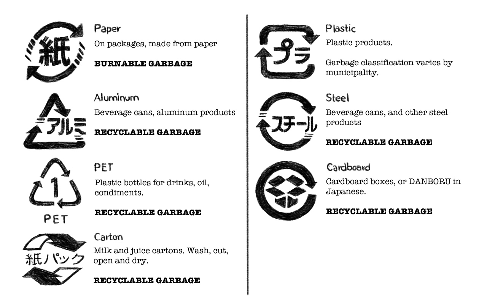

sailing in japan
- introduction
- useful nautical words
- entry procedures
- what to send
- arrival in port
- staying in japan for a while
- sailing at night?
- vhf
- emergency communication
- trash and recycling
- grocery stores
- restaurants
- agents
- electricity
- lpg
- water
- money
- language
- internet
- currents
- navigation
- fishing nets
- heavy traffic
- weather
- tides
- chandleries
- moorage options
- affordable marinas
- boatyards
- travel by land
- participate in a sailing rally
- leaving japan by boat
introduction

Sailing to Japan was a dream for us. The entry procedures are intimidating, but it's not too difficult, all is requires is patience and thoroughness. From a bureaucratic point of view, sailing here is easier than it used to be since the instoration of a cruising permit in 2019. Here is a collection of notes on entry procedures, the papers required for entry as well as information on provisioning, ports and more...
useful nautical words
- ふね (fune) Boat
- ヨット(yotto) Sailboat
- 漁港 (gyokou) Fishing harbour
- ビジターバース (bijitaa baasu) 'Visitor berth' at a marina.
- 予約 (yoyaku) Reservation
- 港 (minato) Harbour
- 地図 (chizu) Map
- マリーナ (mariina) Marina
- 北 (kita) North
- 東 (higashi) East
- 西 (nishi) West
- 南 (minami) South
- 海 (umi) Ocean
entry procedures
Before you even think of entering in Japan by sailboat, there are many preparations to make. You must first decide on your port of entry. In Japan, any open port is a port of entry and can be used to clear into the country. You can view a list of open ports here. Open ports are big shipping ports, used by fishermen and cargo ships alike, with big concrete piers and bollards.
The main ports of entry used by sailors, are:
- Naha (Okinawa) 26°12’34N 127°40’22E
- Kagoshima (Kyushu) 31°29.665'N 130°30.910'E
- Chichijima (Ogasawara) 27°5.921'N 142°12.013'E
- Osaka (Osaka Bay)
- Yokohama (Honshu)
Many of these are not open ports, it is possible to enter via a closed port but it requires applying in advance for a Closed Port Permit. If you want to check in to Naha, Kagoshima and Chichijima applying for this is necessary. If you fail to obtain permission, they will fine you.
The Open and Closed port system is a remnant of the time when Japan was closed to the world. It used to be that as a sailor, you had to apply for every closed port you were planning to visit, but this has now changed (since may 2018) and it is only necessary to apply for a permit for your first port (if a closed port).
what to send
- Closed port permission (if entering at closed port)
- Pre-arrival notice
- Crew list
- Passport scans
- Boat papers (certificate of registry)
Where to send
Once you've chosen your port of entry, you will need to find the email of the coastguard that has jurisdiction over that port.
- Naha (Okinawa) jcgbnahakq3-8f5m@mlit.go.jp
- Chichijima (Ogasawara) jcg3ogasawara-9q3p@mlit.go.jp
- Wakayama (Osaka Bay) jcg5wakayamakotsu2-7g2d@mlit.go.jp
Documents to send:
- pre-arrival notice
- crew list
- passport scans
- boat papers
These documents shoul be sent before leaving your last port. It is also good to send them a way to contact you, like your SAT phone email for instance. Then, when you are 24 hours away, send then another message to update them on your date and time or arrival. It is okay to send them multiple messages if this information changes.
For more information, view the online guide on the Japanese CoastGuard website.
Office of prefecture of arrival
Like the Japanese Coastguard email, you need to find the email of the appointed prefectural representative that will process you closed port permit application. If you are entering in Ogasawara for example, it is part of the Kanto prefecture and so an email must be sent to the Kanto office.
Here is a list of the relevant offices and their emails. To find out how to fill the form, and for more detailed information visit the Ministry of Transport online guide.
Documents to send:
- closed port permission document (only if entering at closed port)
- crew list
- passport scans
- boat papers
These documents should be sent before you leave your last port. They will contact you if information is missing.
arrival in port
At this point, the coastguard should be aware of your arrival and will likely be waiting for you on the pier. It is possible to arrive at night, if this is the case, there will be someone there to greet you anyway and to make sure you don't step on land (you're not supposed to until you're checked in). It's possible that the group of officials will be there already waiting, if so, they will take turns boarding your boat and giving you documents to fill.
You'll be visited by customs, quarantine and immigration. Don't expect them to speak english, although their forms are often written in both languages.
Quarantine
They will ask if you have any plants, meat or other fresh items on board. They may or may not confiscate them, I had none aboard when they came and so they took nothing. I had many dried legumes, grains aboard in jars that they saw, but they didn't care to take them.
You can see a list of prohibited items here.
Customs
The officials will ask you about your last and future ports, they will ask for precise dates. Because making a long list of planned ports is no longer necessary, you only need to give them a general list.
They will give you a Closed port permit, that will give you blanket permission to visit all “closed ports” (which basically means everywhere in Japan that is not an open port, including anchorages) for as long as you are in Japan.
You must request a Naiko Senpaku or naikosen (domestic boat) registration on arrival, insist on it. Customs are reluctant to give it, but do not let them leave without it. This paper changes the boat's domestic status. A naikosen will waive the requirement for you to do port entry/exit Customs paperwork in open and closed ports.
You must cancel the Naikosen (returning the boat to “foreign” status) before leaving Japan. You can get tax-free fuel this way.
Immigration
they will ask you to step off the boat and likely take you into an office to do the paperwork. You will fill a card like they have on planes, and they will take a photo of you as well as a scan of your index fingers, again, this is the same sort of machine they have at airports. They'll ask you to fill many papers, all of these have english writing.
Most travelers are allowed 3 months on a tourist visa, although your boat can stay in Japan indefinitely.
staying in japan for a while
As a tourist, you will only get a 3 months visa, which doesn't give very much time to explore Japan by boat. What options are there to stay longer?
In and Out of the country
You can only do this once, in any 6 month period so don't count on repeating it after that time.
There is a ferry that runs from Fukuoka to Busan that is cheap, and that makes a good option for making a short exit.
Applying for an extension
If after 6 months, you can't leave for whatever reason, you can apply for an extension. Though know that they are very severe when it comes to this, extensions are only ever granted in emergencies (boat in need of repairs, bad weather, it is winter where you plan to go and therefore it is dangerous to leave etc).
To find out more about the extension process, visit the website of the immigration bureau of Japan. The document to fill to extend your stay on a tourist visa can be found here. The extension is not free, but I am not certain what the cost is.
Sail to South Korea
Busan is very close to Japan. If this is your plan, you can sail up the west coast of Japan and exit the country through Tsushima to make the sail to Korea. Canadians can stay in Korea 6 months, but many other nationalities are granted only 90 days. Extensions are difficult to obtain. If longer than a 90-day stay is planned, a special long-term visa must be obtained in advance and one will have to apply for a residence certificate at the local immigration office.
Busan isn't ideal to keep your boat for long periods of time, but there are plenty of other places to go. A friend mentioned Mokpo as being a good, cheap place to keep a boat for a long period (although it's a longer sail than Busan).
Leave the boat in Japan for 6 months
Your boat is allowed to stay, but you aren't, and so one option is to leave your boat in a safe place in Japan for 6 months and to return home. Many cruisers do this, leaving the boat in late fall and returning to Japan in spring.

sailing at night?
Sailing in Japan is different than other places in the world, in the way that sailing by night is strongly discouraged, due to the presence of nets, floats, algae and fish farms. While sailing in the inland sea, a watch at the bow is necessary, even in daytime, so this can give you an idea of what it may be like. A lot of fishermen don't have AIS, and not always on watch at night either so it's best to keep transit times short and during the daylight hours. If a longer passage is necessary, sailing offshore may help to avoid dangers. There is also offshore traffic to consider, especially near and around the Kii peninsula.
If you plan to sail extensively through Japan, chances are you'll be mooring in many small fishing harbours and usually, this means you'll need to dock onto a concrete pier. The walls may, or may not have big rubber bits, and some will have gaps that make it difficult to protect your boat using only fenders. In all cases, having a fenderboard is useful, it will keep your fenders from going into the gaps of the dock (if any) and will protect them from the rough concrete pier. The big rubber bits that many ports have can help to protect your boat, but will leave marks.
vhf
Not many yachties use VHF in Japan, you may not get an answer if you try to contact others with it. Channel 16 is reserved for emergencies, like in the rest of the world.
emergency communication
- Police – Dial 110 (Toll-free)
- Fire – Dial 119 (Toll-free)
- Ambulance – Dial 119 (Toll-free)
- Marine Emergency – Dial 118 (Toll-free)
trash and recycling
Trash and recycling correctly is very important in Japan. Being an island, and a place where lots of packaging is used they put much care into recycling and burning items, pilling it up is not an option. All refuse and recyclable products are washed, and separated. As a visitor, you should try to inform yourself as much as you can.
All in all, there's burnable garbage:
- paper products 紙
- food leftovers
- shoes
- clothes
And recylables:
- plastic プラ
- steel スチール
- aluminum アルミ
- pet bottles
- carton 紙パック
- carboard boxes 段ボール.
You should try and procure a chart to help you divide everything up well. Many konbinis (convenience stores) have bins outside of their store for recyclables, although generally they prefer it to be used for their own products. Though, if you don't have other options it's better to leave your pet bottles, cans and plastics here. They'll usually have a bin for burnable trash too, usually labelled as:
- 燃えるゴミ burnable garbage
The word for garbage is 'gomi'.
Another way to get rid of garbage, is to get the city's schedule for the disposal of these items and to leave them on the street along with the recyclables and/or trash of your neighbours. If you can't find a schedule, just take a peek at what is out on the curb and that should make it clear what you can and can't bring out on that particular day. Although make sure to take it out on the right day, because every item has its own pickup time and day. If you want to put your trash and recyclables with that of others, do it right, because otherwise the truck will not pick it up and label it with a sticker. By doing it wrong, you'll make it someone else's problem and that isn't so nice.
grocery stores
Japanese groceries are usually well-stocked, and prices can be good depending on the time of year (whether or not the veggies or fruit are in season). In general, fruit and veg may be a bit more pricy, because their production is regulated and their output of the highest quality. Many types of fruit, like cherries, watermelon or strawberries are available but are very expensive, they are prized and when bought it is usually as a special treat or to be given as a gift. If you want to buy fruit, it is best to aim for mikan (japanese oranges) and seasonal fruit (like perssimmon - kaki). Some cities have farmer's markets, but the items are not cheap.
The groceries in Japan always include the tax in the labelled price on the shelf.
Provisioning online
For dried goods, you can find almost anything in Japan. The exception to that rule, is oats, cereal, nut butters, whole wheat flour, dried legumes etc... these products can be found, but are very rare and not available in most grocery stores. Many carry the peanut butter brand 'Skippy', but it is expensive and not the best quality. They also carry other 'sweet' brands of nut butters that are overly sweet and that taste more like caramel. For oats, they sometimes carry 'Quaker Oats', but the sort sold in individual packages with sugar and other unwanted additives.
It is possible to order some goods online. If at a marina for a while, this method of provisioning should be considered. Amazon Japan is amazing, and the shipping is very fast and cheap. If you order with Yamato as shipping, you'll even be able to choose your delivery time and date.
Here is a list of websites and stores where you can buy difficult-to-find items:
restaurants
Many restaurants have menu with pictures, that you can use if you're not very good with kanji, katakana or hiragana (3 japanese alphabets). It may be worth learning katakana at least, since it is often used for english terms which are sounded out in japanese. For example:
- ビール (Biiru) is 'Beer'
- スパゲティ (Supagetti) is 'Spaghetti'.
Restaurants where there are many tourists, will often have an english menu. They will likely offer it to you on arrival if they've got one, otherwise you can ask for it with:
- 英語のメニュはありますか
- Eigo no menyuu wa arimasu ka
- Do you have an english menu?
'Eigo' is the word for english, and 'Menyuu' for menu. If they don't have an english menu, you can always ask them for a recommendation by saying
- おすすめおねがいします
- Osusume onegaishimasu
- Your recommendations please!
Osusume is a magic word, it can help in a bind and you can discover something new by using it! They'll likely serve you a popular item, or a house special. Know that there is no tipping in Japan in restaurants.
Food restrictions
If you have food restrictions, like if you don't eat meat, refer to my vegan in japan guide here.
If you have allergies, the word is:
- アレルギー (aregugii)
View this guide for more information on allergies and reading labels in Japan. If you've got serious allergies, it is best to print an international allergy card to show restaurants or shop owners. The card can be made on the website in any language.
agents
Agents aren't necessary when cruising in Japan, but if you want one anyway, contact Kirk Patterson at kirk.silkpurse@yahoo.com or kirk.konpira@yahoo.com. He has sailed extensively throughout Japan, and will be able to help you.
electricity
Voltage in Japan is 100V, American and Canadian boats will have no problem in marinas here.
lpg
It is difficult to get foreign tanks filled in Japan, though some marinas and ports can help you:
- Shima Yacht Harbour (Mie)
- Tannowa Yacht Harbour (Osaka Bay)
- Hagi Port (Yamaguchi)
- Shodo Shima (Kagawa)
Buying a Japanese tank is an option, otherwise, getting a hot-plate that uses propane casettes is a good backup and easy to find anywhere in Japan.
water
The national water infrastructure is reliable and purification facilities are well-maintained, so the tap water is good quality. The water in Japan is 'soft', with a low hardness level. Not all ports can supply water, especially small fishing ports, though it is always good to ask.
- Yotto ni wa, mizu arimasu ka?
- Is there water for my yacht?'
They'll likely ask you how much you need, the word for 'litre' is 'Ritta'. So if you need 100L, you can say:
- Hyaku Ritta onegaishimasu
- 100L please
Writing the quantity on paper is also a helpful and stress-free option.
money
ATMs generally allow you to use your credit card to take out money, otherwise post offices (郵便局 yuubinkyoku) - recognizable by the large red T logo - also have machines that you can use to get cash. In populated cities like Tokyo, many convenience stores (コンビニ konbini) often have ATMs inside that you can use (Family mart, 7eleven).
language
Most Japanese speak little to no english, if you need help, try and find a younger person. Young teens learn english in school and are usually happy to lend a hand. Otherwise, drawing pictures is always fun :). Japanese people are shy at times, but they will get out of their way to help you. Having a dictionary is handy, I highly recommend the iphone app Imiwa for that. It's a big app, but it has everything, and you can also search for kanji with it.
There are 3 alphabets in the Japanese language, as a traveler, you should only focus on the simpler ones: Katakana and Hiragana. Katakana is used to write english words with japanese letters, for example:
- ice cream becomes...
- aisu kuriimu
- アイスクリーム
If you know katakana, you'll be able to decipher many letters on a food menu, american movie titles and products in electonic stores (many use english terms). Katakana has 45 letters, you can use the app Duolingo to learn them. Another cool thing, is that with katakana you'll be able to write your own name in japanese, for instance, mine is:
- レーカベールム (rekka berumu).
In Japanese, all 'L' become 'R', it butchers english names a little but it is still very fun. A celebrity name like Nicole Kiddman becomes ニコルキドマン (Nikoru Kidoman) — not so nice, haha.
If you want to learn even more, Hiragana is the next step. Hiragana is used to write verb conjugations and for particles, if you pick up a children's book you'll also notice that it will be written using hiragana alone. If you know hiragana, you'll be able to read many things!
Kanji is more of a challenge, but learning a few is always fun and helpful. For this step, you can go through the varying levels of the JLPT (Japanese language proficiency test). This is for those who are really into languages. The app I mentioned before, Imiwa, has all of the JLPT levels for study.
internet
The best way to get internet in Japan is to rent a pocket wifi. There are currently more than 30 companies that provide wifi router rental in Japan, with big variations in data allowances, connectivity speeds, coverage and rental periods. Routers use 3G, 4G, WiMAX or LTE and tend to come in 3-, 7-, 14- and 30-day (or longer) packages. Softbank offers many pocket wifi options for rent for light and heavy use. It gets cheaper the long you rent it for or if you pay for time up front. The unit can be received by mail, for more information, check out this page.
For light use, the Ninja Wifi router} is the best deal at about JPY 972 per day. We got the Softbank PocketWiFi 501HW model, which offers unlimited data and costs JPY 29,160 for a 4-6 months rental. Note that this was in 2019.
currents
An important factor in route planning is current; the circulation of currents here is complex and can be quite strong; the Japanese Coast Guard provides a useful simulation of currents for inland waters.
The Kuroshio Current is a high-temperature, high-salinity warm current that is dark blue color as is implied by its name and has a transparency of more than 30 metres. Its flow rate is 2 to 3 kn on the average and reaches up to 4 to 5 kn, and its watercourse changes more violently in direction than is usually anticipated. The Kuroshio Current becomes weak in summer and autumn and strong in winter and spring.
It is always important to pay attention to the movement of the Kuroshio Current as it has a great influence on navigation. For updates on the path of the Kuroshio, check out this website. Under '海洋速報' you'll see the latest update of the current's location and strength. More information on the Kuroshio and counter currents of Japan can be downloaded here.
navigation
A good app for navigating in Japanese waters is New Pec Smart on IOS. It is up to date on the location of fish and oyster farms as well as other navigational hazards. It can only be obtained from the Japanese iOS store (but creating another account for it isn't complicated). The downside to this app is that it is completely in Japanese (hard for those who can't read) but it's also very expensive, it requires a monthly payment of JPY 3,800 — ouch! Though it is a good app, may be worth it if used for a short time.
Sailing directions volume I & volume II is useful. The last two are no longer published and are available online, but you can also purchase newer physical versions of these elsewhere online if you search for: Sailing Directions Japan 158 Volume I & Sailing Directions Japan 159 Volume II.
VHF Channel 16 is mainly a shipping communications channel and should only be used in an emergency.
fishing nets
Japan is a fishing nation, every bay and inlet is occupied by somekind of boat harbour, fish pen, algae or oyster farm. This means that you need to be especially careful when sailing near the coast, some nets can extend far from the shore. The nets are often marked with poles but are not always charted — at least, not on Navionics (some of the more permanent fish havens are).
Getting caught, and causing damage to a fishing net, can be a costly affair — avoid it. They will fine you very large sums.
For nets near and around Shima (mie prefecture) you can check this website. Otherwise, this website lists a few navigational warnings for mariners, updated often.
heavy traffic
There are many dangers when sailing in Japanese waters, one of them is the heavy traffic thundering up and down the coast. Sailing during the day is recommended here, but there are times when the distance is too great and that it isn't possible. In that case, having AIS is a definite advantage.
North of the Kii peninsula (east coast) there is a lot of traffic and you can find yourself sandwiched between many large boats, having AIS makes their intentions — as well as yours — clear. I highly recommend getting it to sail around in Japanese waters.
weather
The sea areas along the coast of Japan are subject to great changes in sea as well as weather conditions, and this constitutes a grave threat to navigation. Amongst these threats there is fog, gales & currents. It is good to inform yourself as much as you can before setting sail. This document outlines the various things to consider when sailing in Japan, regarding weather and traffic.
The best time to sail to Japan from the South Pacific is mid-March to late April, when the winter trades have lessened and before the onset of typhoon season — although there can be typhoons at any moment in the year in this area. In Winter and Spring, north to westerly winds predominate along this indented coastline. In the period between Winter and Spring, the winds blow extra hard — almost as if the Winter is blowing itself out — but as Spring evolves into early Summer, low pressure areas that start to pass through every three or four days bring periods of calm, rain, increasing warmth and easterly winds. (Thank you to SY bosun bird for this description).
We use saildocs to receive weather forecasts, from the Japanese Meteorological Agency.
A good local website for weather is wamwam.co.jp, although it requires a subscription and is entirely in Japanese. If you throw it into a translator it should be easy to read. The subcription costs JPY 30,000 per year and is very thorough, you can find a sample of what you'll get here.
tides
Tidal heights in most of Japan are not extreme though they can reach 2+ metres in some areas at springs. However, there are strong tidal currents and other more established currents which affect navigation considerably.
chandleries
Unlike elsewhere, there aren't always chandleries near the marinas. Buying gear online is easy and cheap and there are many different sites to choose from:
These sites were recommended to me by local Japanese sailors. You can throw these websites in google translate, or get the help of a Japanese friend to order parts.
moorage options
Marinas
There are many great marinas in Japan, all equipped with modern facilities, but the ones near bigger cities (Osaka, Tokyo etc) charge more. You can find a list of marinas — as well as 'mini marinas'(run by local governments and fishing co-ops) — on the website UMI EKI (sea station).
Anchoring
There aren't many bays where one can anchor, they do exist, but they are few and far apart. Many japanese sailors never anchor, they only do in emergencies or when med-mooring. Although some cruising boats have reported that finding anchorages was simple with a good internet connection, and using charts and google maps to spot newly constructed structures (bridges) or fish farms.
Fishing harbours walls
You can moor into most fishing harbours in Japan. All are relatively sheltered, within concrete breakwaters. Some ports will charge nothing, or next to little, even for an extended stay.
Fishing harbours require you to moor onto a concrete wall. If planning to moor in a place like this, it is best to arrive at high tide. When coming alongside at low tide, getting onto the pier may be difficult, not just this, the wall will be encrusted in barnacles and in big winds it may be difficult to moor without damaging your yacht (even with big fenders on).
Using a sturdy fenderboard, with big fenders underneath, is necessary. You will have to adjust your lines with the tide, keep a close eye on the height of it to avoid bad surprises. (Sometimes the tide is so high the fenderboard or fenders pop up onto the dock.)
Harbour pontoons
In some ports, you'll be able to dock onto a small pontoon. The places reserved for visitors will be marked by yellow and black stripes. If there is no more room, find any place you can and ask if it's okay to stay there, otherwise, it may be necessary to tie to another boat; although, again, it's better to ask because not all boats will appreciate you tying to their yacht.
These will usually cost more than tying to a wall — they often belong to fishing/yacht clubs or hotels —, but have the advantage of rising and falling with the tide.
affordable marinas
There aren't many affordable marinas in Japan, many are expensive, and don't have cheaper monthly fees. In fact, many marinas start charging more the longer you stay (weird, i know). Others only permit foreigners to stay for 7 days per month. So where are good places to stay for longer than a week, and for cheap?
Shima Yacht Harbour
- 34°20.148N; 136°41.123E
Water, power, showers & laundry (coin laundry) available. Harbour Master Mr. Oka is very kind, but speaks little english. Hiro san and Kako san are local sailors, Mr. Oka may introduce you to them if they are in town. They are couple that cruise around the world, and currently keep their boat in France, although they come back to Japan often.
The town of Gokasho is a 30 min walk, there's a supermarket that is closer. Next to the supermarket is a DIY store. ATM available at the post office or bank in town. Haulout possible, the marina can help with a variety of projects if needed, there are many workers on site. The marina has a catalogue of parts, and can order stuff for you if needed.
Odo marina
- 33°35.463'N 130°18.704'E
Water available, WIFI and coin-op showers. 15-20 minute walk to nearest supermarket.
Tannowa yacht harbour
- 34°20.2'N 135°11'E
Tannowa is popular with cruisers, as a safe spot to leave your yacht for a long time. The owner offers a reduced monthly fee for visitors. The dock has power and water. Tannowa is not too far from Osaka, and from Kansai airport. Email Takeda Masayuki at tannowa.yh@nifty.com for info.
Yonabaru marina
- 26°12.251'N 127°46.258'E
A marina in Okinawa that was recommended by our friends from SY Muktuk. This is their write-up of their time at Yonabaru:
The harbor master is a fatherly and very kind man who speaks good English. The marina is brand new, operating since two years. Water, power and the two bicycles are for free. A boat yard with two traveler lifts, one for up to 20 t and the other up to 60 t and the rates for hauling out are apparently cheap. Just across the street you can find a small shopping center with a supermarket, a hardware store, a book shop, a 100Yen shop and 2-3 other shops for shoes and clothes. 10 minutes away near the park is a farmers market, a supermarket mainly for fruits and vegetables. The Shuri Castle, from the old kingdom of Ryuku, is also in a good distant to reach by bicycle and several buses go to Naha City, around 30-40 minutes.
Yokohama civic yacht harbour
- 35°24.606'N 139°37.799'E
A yacht club that provides 30 free days for foreign boats that are visiting. Water, diesel and electricity. Shower, toilet and laundry available. Close to downtown Yokohama and a short train ride away from Tokyo.
Fishing ports
Many small fishing ports will charge a small fee for docking, and some will charge nothing at all, it really depends on the location. If adjoined to a resorts or onsen, chances are they will charge something.
boatyards
If you need to haul your boat out, here is a list of good (and affordable) boatyards.
Kaze no ko (Hiroshima)
- 34°07.2'N 132°28.2'E
Owned by Hideto Komura (kazenoko@sf6.so-net.ne.jp). Speaks good english, and they've got a good price. They can help to order parts, if necessary. Accommodates boats who draw a lot. For more info, check out SV Dagon's post here.
Odo marina (Fukuoka)
- 33°35.5'N 130°18.7'E
Marina manager is Sugawara San. Marina has a travel lift, close to supermarket, hardware store, chandlery, coin laundry etc.
travel by land
There are many passes you can get to travel by land, many that fit different budgets. The main ones are:
The railway in Japan is internationally known for its 20 000 km length servicing the whole country, its punctuality and speed. You need to buy it before entering the country. You can choose a first class (green) pass that is more expensive, but the seats are more spacious, otherwise there is the ordinary pass. Pricing for the ordinary pass is as follows: for 7 days (JPY 29,110), 14 days (JPY 46,390) and 21 days (JPY 59,350). It works on JR trains, the Tokyo Monorail, some non JR lines as well as local JR buses. For more info, check out this website.
This is useful for the Osaka region. A three day pass is JPY 5,000 for adults, half price for children for three days unlimited travel on everything but JR trains, which in Kansai is not a problem, and almost all buses and subways. At JPY 1,660 per day for an adult, even a trip to Osaka and back with a couple of subway rides is cheaper on the pass, plus it means you don't have to stand in line and buy tickets. A day on the pass is a calendar day, not 24 hours and the days don't have to be consecutive (the pass is valid for about 6 weeks). It can be used on buses and subways as well as the trains. The Kansai pass is available from the Information Center at the Osaka Namba station
The Japan Bus Pass by Willer Express can be used on overnight and daytime long distance buses on the network of Willer Express on three (JPY 10,000), five (JPY 12,500) or seven days (JPY 15,000) of your choice within two months from purchase. It is longer than traveling by train, but for budget-conscious people it is a very good option. It can be purchased online here.
participate in a sailing rally
A rally is a great way to meet Japanese sailors, and to see some new places in good company. The Setouchi International Yacht Rally is a good option. It is held in Seto Inland Sea of Japan since 2013, and usually takes place in the spring. The Rally usually lasts about two weeks, and costs about JPY 55,000 (for one person, and the boat. Otherwise it's another JPY 35,000 per person).
Leaving Japan by yacht
Prior to departing Japan, a yacht must report estimated time of departure to the Coast Guard at the last port from which the yacht will depart and submit a ‘Notification of Departure’ form as per instruction by a Coast Guard officer. The captain and all crew members need their passports stamped with an exit stamp at the port of departure. Prior to departing from Japan, it is necessary that the status of the yacht be changed back to 'Special Ship' by notifying the status change to the concerned customs office.
leaving japan by boat
You will need to exit via a port of entry. If you have a Naikosen, you will need to cancel it (returning the boat to “foreign” status) before leaving Japan. Once it has been cancelled, you can fill up with tax-free fuel.